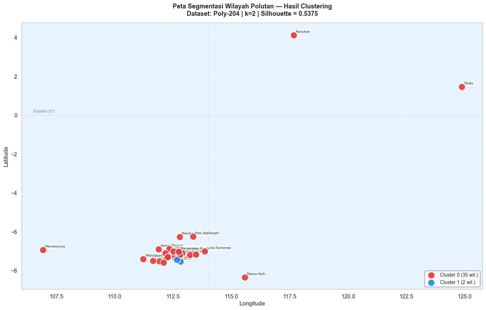

Tahap 4 — Visualisasi Peta Segmentasi Wilayah#
Tahap terakhir ini menampilkan hasil clustering di atas peta interaktif Indonesia menggunakan library Folium (berbasis Leaflet.js). Setiap wilayah divisualisasikan dengan warna berbeda sesuai clusternya.
Mengapa Peta?#
Peta adalah cara paling intuitif untuk memahami pola spasial clustering:
Apakah wilayah yang berdekatan cenderung masuk ke cluster yang sama?
Apakah ada pola regional (Jawa, Kalimantan, dll.)?
Wilayah mana yang memiliki karakteristik polutan paling unik (outlier)?
Strategi Geocoding#
Data tidak memiliki kolom koordinat, sehingga kita perlu geocoding — mengubah nama daerah menjadi koordinat (latitude, longitude).
Strategi yang digunakan (prioritas berurutan):
Lookup hardcoded — koordinat yang sudah diverifikasi manual
Nominatim (OpenStreetMap) — geocoding otomatis via geopy
Fallback — koordinat pusat Jawa Timur + jitter acak (jika gagal)
Warning
Hasil geocoding otomatis bisa tidak akurat untuk nama daerah yang ambigu. Verifikasi koordinat dengan membuka peta interaktif yang dihasilkan.
4.1 Import & Load Data Tahap 3#
import warnings
warnings.filterwarnings('ignore')
import pickle, os, json, time
import numpy as np
import pandas as pd
import matplotlib.pyplot as plt
import matplotlib.patches as mpatches
import seaborn as sns
import folium
from folium import plugins
OUTPUT_DIR = '../output'
plt.rcParams['figure.figsize'] = (13, 5)
sns.set_theme(style='whitegrid', font_scale=1.05)
# ── Load data dari Tahap 3 ───────────────────────────────────
with open(f'{OUTPUT_DIR}/tahap3_clustering.pkl', 'rb') as f:
d = pickle.load(f)
BEST_DATASET = d['BEST_DATASET']
BEST_K = d['BEST_K']
BEST_SIL = d['BEST_SIL']
BEST_LABELS = d['BEST_LABELS']
CLUSTER_COLORS = d['CLUSTER_COLORS']
meta_linear = d['meta_linear']
meta_poly = d['meta_poly']
X_linear = d['X_linear']
X_poly = d['X_poly']
df_hasil = d['df_hasil']
meta_best = meta_linear if 'Linear' in BEST_DATASET else meta_poly
X_raw = X_linear if 'Linear' in BEST_DATASET else X_poly
print(f'Data Tahap 3 berhasil dimuat.')
print(f' Konfigurasi terbaik: {BEST_DATASET}, k={BEST_K}, sil={BEST_SIL:.4f}')
print(f' Jumlah wilayah : {len(meta_best)}')
Data Tahap 3 berhasil dimuat.
Konfigurasi terbaik: Poly-204, k=2, sil=0.5375
Jumlah wilayah : 37
4.2 Geocoding: Nama Daerah → Koordinat#
# ── Koordinat hardcoded (terverifikasi manual) ────────────────
KOORDINAT_DB = {
'Baron Nganjuk' : (-7.5083, 111.9167),
'Nunukan' : ( 4.1333, 117.6667),
'Sreseh, Sampang' : (-7.1833, 113.2167),
'Manyar, Gresik' : (-7.1500, 112.6500),
'Kamal, Bangkalan' : (-7.1833, 112.7833),
'Kedungpring Lamongan' : (-7.3500, 112.2167),
'Gresik Kota, Gresik' : (-7.1556, 112.6527),
'Waru, Pamekasan' : (-7.1667, 113.4833),
'Paciran, Lamongan' : (-6.8667, 112.3333),
'Kertosono, Nganjuk' : (-7.5833, 112.1000),
}
CACHE_FILE = f'{OUTPUT_DIR}/koordinat_cache.json'
# Load cache yang sudah ada
if os.path.exists(CACHE_FILE):
with open(CACHE_FILE) as f:
koordinat_cache = json.load(f)
print(f'Cache dimuat: {len(koordinat_cache)} koordinat')
else:
koordinat_cache = {}
def get_koordinat(daerah: str):
"""Cari koordinat dengan prioritas: hardcoded → cache → Nominatim → fallback."""
if daerah in koordinat_cache:
return tuple(koordinat_cache[daerah])
# Cek hardcoded
for key, coord in KOORDINAT_DB.items():
if key.lower() in daerah.lower() or daerah.lower() in key.lower():
return coord
# Coba Nominatim
try:
from geopy.geocoders import Nominatim
from geopy.extra.rate_limiter import RateLimiter
geo = Nominatim(user_agent='psd_cluster_2026')
geocode = RateLimiter(geo.geocode, min_delay_seconds=1)
loc = geocode(daerah + ', Indonesia')
if loc:
print(f' Nominatim: {daerah} → ({loc.latitude:.4f}, {loc.longitude:.4f})')
return (loc.latitude, loc.longitude)
except Exception as e:
print(f' Nominatim gagal ({daerah}): {e}')
# Fallback: Jawa Timur dengan seed acak dari nama
rng = np.random.default_rng(abs(hash(daerah)) % 2**32)
return (-7.5 + rng.uniform(-1.5, 1.5), 112.7 + rng.uniform(-3, 3))
# Geocode semua wilayah
print('\nMengambil koordinat semua wilayah...')
for daerah in meta_best['daerah']:
if daerah not in koordinat_cache:
lat, lon = get_koordinat(daerah)
koordinat_cache[daerah] = [lat, lon]
time.sleep(0.3)
# Simpan cache
with open(CACHE_FILE, 'w', encoding='utf-8') as f:
json.dump(koordinat_cache, f, indent=2, ensure_ascii=False)
print(f'\nTotal koordinat: {len(koordinat_cache)} wilayah → disimpan ke cache')
Cache dimuat: 35 koordinat
Mengambil koordinat semua wilayah...
Total koordinat: 35 wilayah → disimpan ke cache
4.3 Siapkan DataFrame Peta#
# ── Gabungkan label cluster + koordinat ───────────────────────
df_map = meta_best.copy().reset_index(drop=True)
df_map['cluster'] = BEST_LABELS
df_map['lat'] = df_map['daerah'].map(lambda d: koordinat_cache.get(d, [-7.5, 112.7])[0])
df_map['lon'] = df_map['daerah'].map(lambda d: koordinat_cache.get(d, [-7.5, 112.7])[1])
# Tambahkan statistik polutan utama (NO2, SO2, CO mean)
for pol in ['no2', 'so2', 'co']:
col_mean = f'{pol}_calc_mean'
if col_mean in X_raw.columns:
df_map[f'{pol}_mean'] = X_raw[col_mean].values
else:
df_map[f'{pol}_mean'] = np.nan
print('DataFrame peta (semua 37 wilayah):')
print(df_map[['daerah','cluster','lat','lon','no2_mean','so2_mean','co_mean']].to_string())
DataFrame peta (semua 37 wilayah):
daerah cluster lat lon no2_mean so2_mean co_mean
0 Baron Nganjuk 0 -7.508300 111.916700 0.000028 0.000072 0.030248
1 Nunukan 0 4.133300 117.666700 0.000007 -0.000005 0.027691
2 Sreseh, Sampang 0 -7.183300 113.216700 0.000027 0.000007 0.029516
3 Manyar, Gresik 0 -7.150000 112.650000 0.000071 0.000161 0.028816
4 Kamal, Bangkalan 0 -7.183300 112.783300 0.000083 0.000140 0.027027
5 Kedungpring Lamongan 0 -7.350000 112.216700 0.000030 0.000067 0.029689
6 Gresik Kota, Gresik 0 -7.155600 112.652700 0.000064 0.000183 0.028956
7 Waru, Pamekasan 0 -7.166700 113.483300 0.000015 -0.000035 0.027199
8 Paciran, Lamongan 0 -6.866700 112.333300 0.000029 0.000030 0.029583
9 Kertosono, Nganjuk 0 -7.583300 112.100000 0.000030 0.000084 0.030080
10 Jabon, Sidoarjo 1 -7.535107 112.810693 0.000032 0.000133 0.029341
11 Menganti, Gresik 0 -7.302893 112.582880 0.000048 0.000090 0.029256
12 Bandung - Jogoroto, Jombang 0 -6.260825 112.791339 0.000032 0.000067 0.029455
13 Banyu Ajuh, Perumnas, Kamal 0 -8.337179 115.578803 0.000043 0.000040 0.028701
14 Widang, Tuban 0 -7.085111 112.170846 0.000031 0.000025 0.029439
15 Kwanyar, Bangkalan 0 -7.163871 112.850963 0.000028 0.000033 0.028343
16 sambeng, lamongan 0 -7.297267 112.270859 0.000030 0.000061 0.029020
17 Kec. Kalianget, Sumenep 0 -6.243164 113.360867 0.000016 -0.000006 0.027837
18 Cerme, Gresik 0 -7.224250 112.570795 0.000070 0.000180 0.030548
19 Tikala, Manado 0 1.467980 124.862466 0.000009 -0.000013 0.025340
20 Kerek, Tuban 0 -6.897059 111.885492 0.000043 0.000033 0.029654
21 Kwanyar, Bangkalan 0 -7.163871 112.850963 0.000029 0.000033 0.028166
22 Wonokromo, Surabaya 0 -7.302055 112.739222 0.000043 0.000049 0.028974
23 Asemrowo, Surabaya 0 -7.241740 112.688802 0.000054 0.000253 0.029542
24 Kota Sumenep, Sumenep 0 -7.006745 113.859867 0.000016 -0.000004 0.027623
25 Socah, Bangkalan 0 -7.090936 112.705530 0.000029 0.000054 0.028635
26 Pilangkenceng, Madiun 0 -7.499596 111.644255 0.000021 0.000067 0.029531
27 Tanah Merah, Bangkalan 0 -7.088275 112.885340 0.000028 0.000153 0.028259
28 Sidoarjo, Wonoayu 1 -7.445557 112.664448 0.000043 0.000171 0.031353
29 Labang, Bangkalan 0 -7.139610 112.773094 0.000029 0.000060 0.028723
30 Widodaren, Ngawi 0 -7.402855 111.223853 0.000024 0.000022 0.029528
31 Bangkalan, Bangkalan 0 -7.029470 112.747333 0.000026 0.000098 0.028608
32 Warudoyong, Kota Sukabumi 0 -6.934076 106.920945 0.000035 0.000023 0.028070
33 Kamal, Bangkalan 0 -7.183300 112.783300 0.000046 0.000052 0.028812
34 Banyuajuh kamal, Bangkalan 0 -7.183300 112.783300 0.000044 0.000059 0.028746
35 Dukun, Gresik 0 -6.996352 112.509848 0.000029 0.000044 0.029046
36 Kecamatan Bangkalan,Bangkalan 0 -7.029470 112.747333 0.000025 0.000031 0.028511
4.4 Peta Interaktif Folium#
Peta interaktif ini menggunakan Leaflet.js via Folium, dengan fitur:
Marker berwarna per cluster (dapat diklik untuk detail)
Layer control — toggle tampilkan/sembunyikan cluster
Pilihan basemap (light, dark, OpenStreetMap)
Legenda di pojok kiri bawah
Tooltip saat hover
# ── Buat peta Folium ──────────────────────────────────────────
# CATATAN: tile CARTO ('CartoDB positron' / 'CartoDB dark_matter') sekarang wajib API key,
# tanpa key peta menampilkan watermark "API KEY REQUIRED". Karena itu basemap default diganti
# ke provider yang tidak memerlukan key (OpenStreetMap dan Esri).
m = folium.Map(
location=[-2.5, 118.0], # Pusat Indonesia
zoom_start=5,
tiles=None, # basemap ditambahkan manual di bawah
control_scale=True
)
folium.TileLayer('OpenStreetMap', name='OpenStreetMap (default)', show=True).add_to(m)
folium.TileLayer(
tiles='https://server.arcgisonline.com/ArcGIS/rest/services/World_Street_Map/MapServer/tile/{z}/{y}/{x}',
attr='Tiles © Esri',
name='Esri Street Map', show=False
).add_to(m)
folium.TileLayer(
tiles='https://server.arcgisonline.com/ArcGIS/rest/services/World_Imagery/MapServer/tile/{z}/{y}/{x}',
attr='Tiles © Esri — Source: Esri, Maxar, Earthstar Geographics',
name='Citra Satelit (Esri)', show=False
).add_to(m)
# OPSIONAL: aktifkan basemap CARTO jika Anda punya API key gratis (carto.com/basemaps/apikey).
# Simpan key di environment variable CARTO_API_KEY, jangan ditulis langsung di notebook.
CARTO_KEY = os.environ.get('CARTO_API_KEY', '')
if CARTO_KEY:
carto_attr = ('© <a href="https://www.openstreetmap.org/copyright">OpenStreetMap</a>, '
'© <a href="https://carto.com/attributions">CARTO</a>')
for estilo, nama in [('light_all', 'CARTO Light'), ('dark_all', 'CARTO Dark')]:
folium.TileLayer(
tiles=f'https://basemaps.cartocdn.com/rastertiles/{estilo}/{{z}}/{{x}}/{{y}}.png?key={CARTO_KEY}',
attr=carto_attr, name=nama, show=False
).add_to(m)
# Buat FeatureGroup per cluster
fg_clusters = []
for c in range(BEST_K):
fg = folium.FeatureGroup(name=f'Cluster {c}', show=True)
fg_clusters.append(fg)
m.add_child(fg)
# Tambahkan marker
for _, row in df_map.iterrows():
c = int(row['cluster'])
col = CLUSTER_COLORS[c % len(CLUSTER_COLORS)]
# Popup HTML detail
no2_txt = f"{row.get('no2_mean', float('nan')):.4f}" if pd.notna(row.get('no2_mean')) else 'N/A'
so2_txt = f"{row.get('so2_mean', float('nan')):.4f}" if pd.notna(row.get('so2_mean')) else 'N/A'
co_txt = f"{row.get('co_mean', float('nan')):.4f}" if pd.notna(row.get('co_mean')) else 'N/A'
popup_html = f"""
<div style="font-family:'Segoe UI',Arial,sans-serif; min-width:220px; max-width:280px;">
<div style="background:{col};color:white;padding:8px 12px;border-radius:6px 6px 0 0;">
<b style="font-size:14px;">Cluster {c}</b>
</div>
<div style="padding:10px 12px;border:1px solid #eee;border-top:none;border-radius:0 0 6px 6px;">
<table style="width:100%;border-collapse:collapse;font-size:12px;">
<tr><td style="color:#777;padding:2px 0">Daerah</td>
<td><b>{row['daerah']}</b></td></tr>
<tr><td style="color:#777;padding:2px 0">Nama</td>
<td>{row['nama']}</td></tr>
<tr><td style="color:#777;padding:2px 0">Koordinat</td>
<td>{row['lat']:.4f}, {row['lon']:.4f}</td></tr>
<tr><td colspan=2><hr style="margin:6px 0"></td></tr>
<tr><td style="color:#1565C0;padding:2px 0">NO₂ mean</td>
<td><b>{no2_txt}</b></td></tr>
<tr><td style="color:#B71C1C;padding:2px 0">SO₂ mean</td>
<td><b>{so2_txt}</b></td></tr>
<tr><td style="color:#1B5E20;padding:2px 0">CO mean</td>
<td><b>{co_txt}</b></td></tr>
<tr><td colspan=2><hr style="margin:6px 0"></td></tr>
<tr><td style="color:#777">Dataset</td>
<td>{BEST_DATASET}</td></tr>
<tr><td style="color:#777">Silhouette</td>
<td>{BEST_SIL:.4f}</td></tr>
</table>
</div>
</div>
"""
# Circle marker
folium.CircleMarker(
location=[row['lat'], row['lon']],
radius=14, color=col, fill=True,
fill_color=col, fill_opacity=0.75, weight=2.5,
popup=folium.Popup(popup_html, max_width=300),
tooltip=f"Cluster {c}: {row['daerah']}"
).add_to(fg_clusters[c])
# Label cluster di tengah marker
folium.Marker(
location=[row['lat'], row['lon']],
icon=folium.DivIcon(
html=(f'<div style="font-size:9px;font-weight:bold;color:white;'
f'background:{col};border-radius:50%;width:22px;height:22px;'
f'display:flex;align-items:center;justify-content:center;'
f'box-shadow:0 2px 4px rgba(0,0,0,0.4);">C{c}</div>'),
icon_size=(22, 22), icon_anchor=(11, 11)
),
tooltip=row['daerah']
).add_to(fg_clusters[c])
print(f'Marker berhasil ditambahkan untuk {len(df_map)} wilayah.')
Marker berhasil ditambahkan untuk 37 wilayah.
# ── Legenda HTML ──────────────────────────────────────────────
uniq, cnts = np.unique(BEST_LABELS, return_counts=True)
legend_items = ''.join([
f'<div style="display:flex;align-items:center;margin:4px 0;">'
f'<div style="width:16px;height:16px;border-radius:50%;background:{CLUSTER_COLORS[c]};'
f'margin-right:8px;flex-shrink:0;"></div>'
f'<span>Cluster {c} — {n} wilayah</span></div>'
for c, n in zip(uniq, cnts)
])
legend_html = f"""
<div style="position:fixed;bottom:30px;left:30px;z-index:9999;
background:white;padding:16px 20px;border-radius:10px;
box-shadow:0 4px 15px rgba(0,0,0,0.2);
font-family:'Segoe UI',Arial,sans-serif;min-width:200px;">
<div style="font-size:14px;font-weight:bold;margin-bottom:4px;">Segmentasi Cluster</div>
<div style="font-size:11px;color:#777;margin-bottom:10px;">
Dataset: {BEST_DATASET} | k={BEST_K} | Sil={BEST_SIL:.3f}
</div>
<hr style="margin:0 0 10px;border-color:#eee;">
{legend_items}
<hr style="margin:10px 0 6px;border-color:#eee;">
<div style="font-size:10px;color:#aaa;">Klik marker untuk detail</div>
</div>
"""
m.get_root().html.add_child(folium.Element(legend_html))
# Layer control
folium.LayerControl(collapsed=False, position='topright').add_to(m)
# Minimap
try:
minimap = plugins.MiniMap(toggle_display=True, tile_layer='OpenStreetMap')
m.add_child(minimap)
except Exception:
pass
# Simpan peta
map_path = f'{OUTPUT_DIR}/peta_clustering_interaktif.html'
m.save(map_path)
print(f'Peta interaktif disimpan:')
print(f' {os.path.abspath(map_path)}')
print(f' Ukuran: {os.path.getsize(map_path)/1024:.0f} KB')
# Tampilkan di notebook
m
Peta interaktif disimpan:
C:\Users\OKAN\OneDrive\Dokumen\PSD\materi\Clustering_Segmentasi\output\peta_clustering_interaktif.html
Ukuran: 142 KB
4.5 Peta Statis (Matplotlib) — untuk Laporan#
# ── Peta statis scatter ───────────────────────────────────────
fig, ax = plt.subplots(figsize=(14, 9))
for c in range(BEST_K):
mask = df_map['cluster'] == c
sub = df_map[mask]
ax.scatter(sub['lon'], sub['lat'],
s=200, color=CLUSTER_COLORS[c],
edgecolors='white', linewidth=1.5,
label=f'Cluster {c} ({mask.sum()} wil.)',
alpha=0.9, zorder=4)
for _, row in sub.iterrows():
ax.annotate(
row['daerah'].split(',')[0][:14],
xy=(row['lon'], row['lat']),
xytext=(4, 5), textcoords='offset points',
fontsize=7.5, color='#333',
bbox=dict(boxstyle='round,pad=0.2', facecolor='white', alpha=0.6, linewidth=0)
)
# Garis grid
ax.set_facecolor('#E8F4FD')
ax.grid(True, linestyle='--', alpha=0.4, color='white')
# Garis batas
ax.axhline(0, color='gray', linewidth=0.5, linestyle=':')
ax.axvline(114, color='gray', linewidth=0.5, linestyle=':', alpha=0.5)
ax.set_xlabel('Longitude', fontsize=12)
ax.set_ylabel('Latitude', fontsize=12)
ax.set_title(f'Peta Segmentasi Wilayah Polutan — Hasil Clustering\n'
f'Dataset: {BEST_DATASET} | k={BEST_K} | Silhouette = {BEST_SIL:.4f}',
fontsize=13, fontweight='bold', pad=15)
ax.legend(loc='lower right', fontsize=10, framealpha=0.9,
edgecolor='gray', fancybox=True)
# Anotasi equator
ax.text(ax.get_xlim()[0]+0.5, 0.15, 'Equator (0°)',
fontsize=8, color='gray', style='italic')
plt.tight_layout()
plt.savefig(f'{OUTPUT_DIR}/12_peta_statis.png', dpi=150, bbox_inches='tight')
plt.show()
print('Peta statis disimpan: output/12_peta_statis.png')

Peta statis disimpan: output/12_peta_statis.png
4.6 Ringkasan Lengkap Analisis#
# ── Cetak ringkasan lengkap ───────────────────────────────────
separator = '=' * 65
print(separator)
print(' RINGKASAN LENGKAP ANALISIS CLUSTERING SEGMENTASI POLUTAN')
print(separator)
print('\n[TAHAP 1] DATA & EDA')
print(f' Sumber : MySQL — basisda1_PSD-A-Interpolasi')
print(f' Tabel : ekstraksi_fitur_linear + ekstraksi_fitur_polynomial')
print(f' Ukuran : 37 wilayah × 204 fitur (68 per polutan)')
print('\n[TAHAP 2] REDUKSI DIMENSI (PCA)')
print(f' Standardisasi : StandardScaler (mean=0, std=1)')
print(f' PCA Tahap 1 : 204 → 74 komponen')
print(f' PCA Tahap 2 : 74 → 37 komponen')
print(f' Total varian : tergantung dataset (lihat notebook Tahap 2)')
print('\n[TAHAP 3] EKSPERIMEN CLUSTERING')
print(f' Algoritma : K-Means (k-means++, n_init=20)')
print(f' Variasi : 6 dataset × k=2..10 = 54 eksperimen')
print(f' Evaluasi : Silhouette Coefficient')
print(f' Konfigurasi : {BEST_DATASET}, k={BEST_K}')
print(f' Silhouette : {BEST_SIL:.4f}')
print('\n[TAHAP 4] VISUALISASI PETA')
print(f' Geocoding : Nominatim (OpenStreetMap) + hardcoded')
print(f' Peta interaktif : output/peta_clustering_interaktif.html')
print(f' Peta statis : output/12_peta_statis.png')
print('\nDISTRIBUSI WILAYAH PER CLUSTER:')
print('-' * 65)
for c in range(BEST_K):
mask = df_map['cluster'] == c
wils = df_map[mask]['daerah'].tolist()
print(f'\nCluster {c} ({len(wils)} wilayah) ─ warna: {CLUSTER_COLORS[c]}')
for w in wils:
print(f' • {w}')
print('\n' + separator)
print(' OUTPUT FILES (folder output/)')
print(separator)
for fname in sorted(os.listdir(OUTPUT_DIR)):
fpath = os.path.join(OUTPUT_DIR, fname)
size = os.path.getsize(fpath)
print(f' {fname:<45} {size/1024:6.1f} KB')
print('\n[SELESAI]')
=================================================================
RINGKASAN LENGKAP ANALISIS CLUSTERING SEGMENTASI POLUTAN
=================================================================
[TAHAP 1] DATA & EDA
Sumber : MySQL — basisda1_PSD-A-Interpolasi
Tabel : ekstraksi_fitur_linear + ekstraksi_fitur_polynomial
Ukuran : 37 wilayah × 204 fitur (68 per polutan)
[TAHAP 2] REDUKSI DIMENSI (PCA)
Standardisasi : StandardScaler (mean=0, std=1)
PCA Tahap 1 : 204 → 74 komponen
PCA Tahap 2 : 74 → 37 komponen
Total varian : tergantung dataset (lihat notebook Tahap 2)
[TAHAP 3] EKSPERIMEN CLUSTERING
Algoritma : K-Means (k-means++, n_init=20)
Variasi : 6 dataset × k=2..10 = 54 eksperimen
Evaluasi : Silhouette Coefficient
Konfigurasi : Poly-204, k=2
Silhouette : 0.5375
[TAHAP 4] VISUALISASI PETA
Geocoding : Nominatim (OpenStreetMap) + hardcoded
Peta interaktif : output/peta_clustering_interaktif.html
Peta statis : output/12_peta_statis.png
DISTRIBUSI WILAYAH PER CLUSTER:
-----------------------------------------------------------------
Cluster 0 (35 wilayah) ─ warna: #E53935
• Baron Nganjuk
• Nunukan
• Sreseh, Sampang
• Manyar, Gresik
• Kamal, Bangkalan
• Kedungpring Lamongan
• Gresik Kota, Gresik
• Waru, Pamekasan
• Paciran, Lamongan
• Kertosono, Nganjuk
• Menganti, Gresik
• Bandung - Jogoroto, Jombang
• Banyu Ajuh, Perumnas, Kamal
• Widang, Tuban
• Kwanyar, Bangkalan
• sambeng, lamongan
• Kec. Kalianget, Sumenep
• Cerme, Gresik
• Tikala, Manado
• Kerek, Tuban
• Kwanyar, Bangkalan
• Wonokromo, Surabaya
• Asemrowo, Surabaya
• Kota Sumenep, Sumenep
• Socah, Bangkalan
• Pilangkenceng, Madiun
• Tanah Merah, Bangkalan
• Labang, Bangkalan
• Widodaren, Ngawi
• Bangkalan, Bangkalan
• Warudoyong, Kota Sukabumi
• Kamal, Bangkalan
• Banyuajuh kamal, Bangkalan
• Dukun, Gresik
• Kecamatan Bangkalan,Bangkalan
Cluster 1 (2 wilayah) ─ warna: #1E88E5
• Jabon, Sidoarjo
• Sidoarjo, Wonoayu
=================================================================
OUTPUT FILES (folder output/)
=================================================================
01_distribusi_fitur.png 76.5 KB
02_heatmap_korelasi.png 208.8 KB
03_linear_vs_poly.png 156.2 KB
04_standardisasi.png 92.7 KB
04a_batas_pca.png 85.7 KB
04c_pipeline_reduksi.png 38.2 KB
05_seleksi_fitur.png 53.5 KB
06_pca_tahap3.png 113.2 KB
07_silhouette_semua.png 275.3 KB
07b_heatmap_silhouette.png 171.0 KB
08_silhouette_plot.png 50.2 KB
09_elbow_silhouette.png 100.0 KB
10_scatter_cluster.png 138.6 KB
11_profil_cluster.png 119.7 KB
12_peta_statis.png 130.0 KB
koordinat_cache.json 2.3 KB
peta_clustering_interaktif.html 141.5 KB
ringkasan_eksperimen.csv 0.3 KB
tahap1_data.pkl 131.1 KB
tahap2_pca.pkl 434.3 KB
tahap3_clustering.pkl 134.4 KB
[SELESAI]